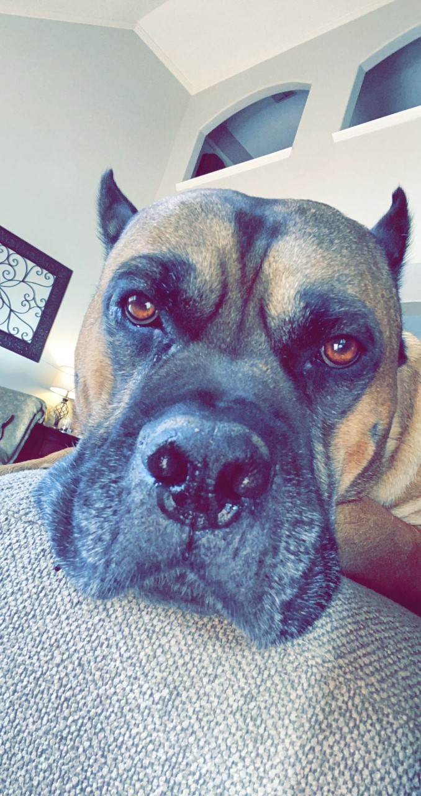
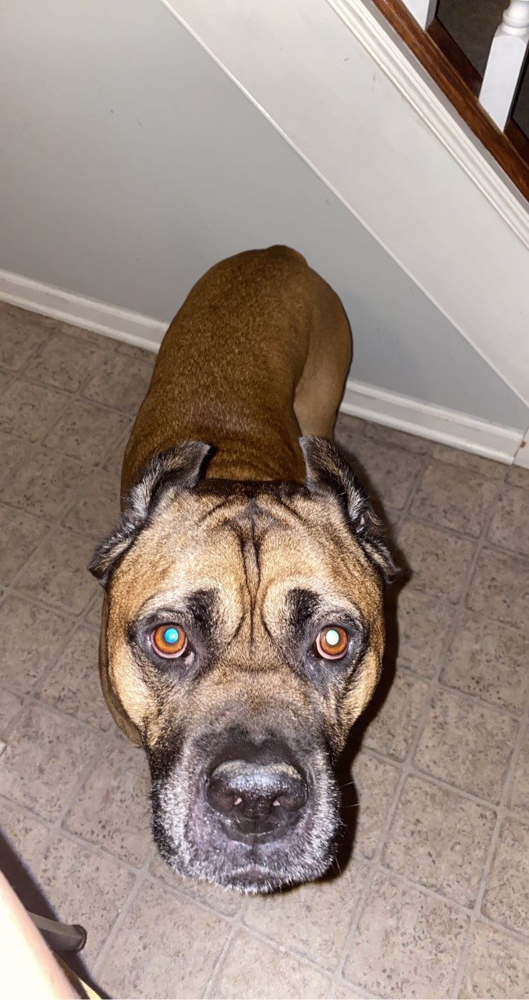
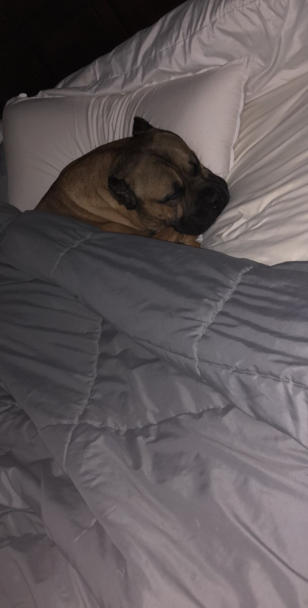
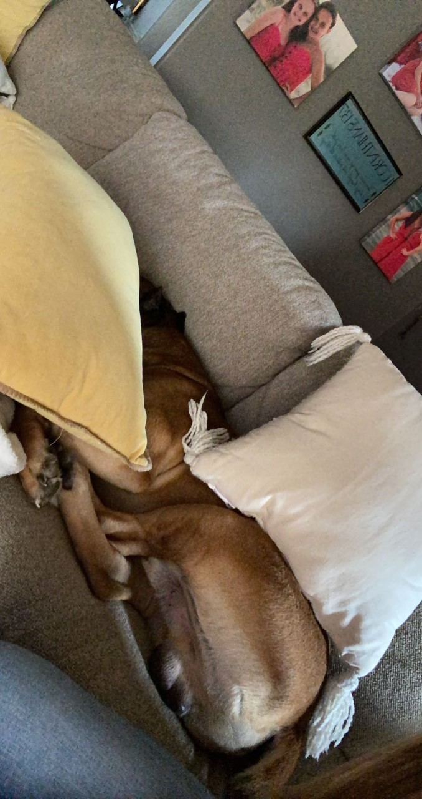

He barks at any and everything that passes our house


Rocco's Personality
Rocco is a very laid back dog. He is very gentle with everyone and has never even tried to bite or snap at anyone. If someone is at out front door he will bark but he has never gone past that point.
Rocco's favorite words
Outside
Treat
Cookie


One of Rocco's favorite things to do is sleep. If he is in one of our beds he likes to get under the blankets and sleep with his head on the pillow like a human. He also likes to bury himself in the pillows on the couch.